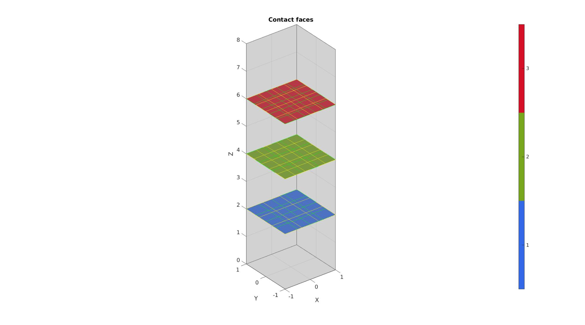
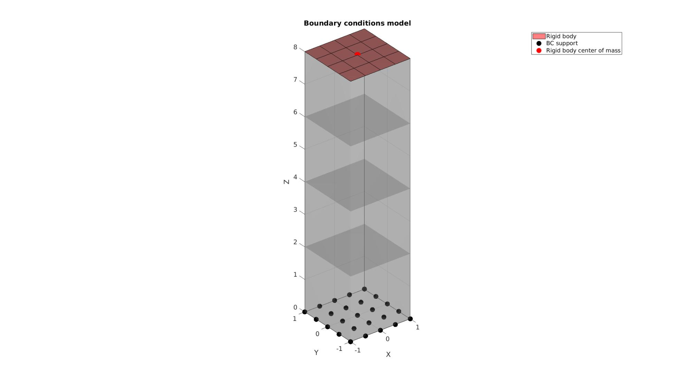

DEMO_febio_0029_contact_friction_benchmark_boxes
Below is a demonstration for a FEBio demo presented at the FEBio workshop at WCB 2018. Four cubes are stacked on top of each other. Sliding-elastic contact with friction is defined between them. The top cube is forced downwards in a rotation motion thereby compressing the other cubes and also transferring some twist due to frictional forces.
The demo includes * Building geometry for 4 cubes with hexahedral elements * Defining the boundary conditions * Coding the febio structure * Running the model * Importing and visualizing the displacement results
Contents
Keywords
- febio_spec version 4.0
- febio, FEBio
- indentation
- contact, sliding, sliding-elastic, friction
- rigid body constraints
- hexahedral elements, hex8
- quadrilateral elements, quad4
- static, solid
- displacement logfile
- stress logfile
clear; close all; clc;
Plot settings
fontSize=15; faceAlpha1=0.8; faceAlpha2=0.3; markerSize=40; markerSize2=20; lineWidth=3;
Control parameters
% Path names defaultFolder = fileparts(fileparts(mfilename('fullpath'))); savePath=fullfile(defaultFolder,'data','temp'); % Defining file names febioFebFileNamePart='tempModel'; febioFebFileName=fullfile(savePath,[febioFebFileNamePart,'.feb']); %FEB file name febioLogFileName=fullfile(savePath,[febioFebFileNamePart,'.txt']); %FEBio log file name febioLogFileName_disp=[febioFebFileNamePart,'_disp_out.txt']; %Log file name for exporting displacement febioLogFileName_strainEnergy=[febioFebFileNamePart,'_fsed_out.txt']; %Log file name for exporting strain energy density %Specifying dimensions and number of elements for slab sampleHeight=2; %Height sampleWidth=sampleHeight; %Width sampleThickness=sampleHeight; %Thickness numElementsWidth=[4 3 5 4]; %Number of elemens in dir 1 numElementsThickness=numElementsWidth; %Number of elemens in dir 2 numElementsHeight=numElementsWidth; %Number of elemens in dir 3 %Material parameter set youngsModuli = [0.3 10 0.3 10 ]; poissonsRatios = [0.4 0.1 0.4 0.1]; % FEA control settings numTimeSteps=10; %Number of time steps desired max_refs=25; %Max reforms max_ups=0; %Set to zero to use full-Newton iterations opt_iter=25; %Optimum number of iterations max_retries=10; %Maximum number of retires dtmin=(1/numTimeSteps)/10; %Minimum time step size dtmax=1/numTimeSteps; %Maximum time step size symmetric_stiffness=0; runMode='external';% 'internal' or 'external' %Contact parameters contactInitialOffset=0; boxOffsets=sampleHeight+contactInitialOffset; %Prescribed displacement prescribedDisplacement_Z=-2; prescribedRotation_Z=pi/2;
Creating model geometry and mesh
A box is created with tri-linear hexahedral (hex8) elements using the hexMeshBox function. The function offers the boundary faces with seperate labels for the top, bottom, left, right, front, and back sides. As such these can be used to define boundary conditions on the exterior.
E=[]; elementMaterialID=[]; V=[]; Fb=[]; Cb=[]; for q=1:1:4 % Create a box with hexahedral elements beamDimensions=[sampleWidth sampleThickness sampleHeight]; %Dimensions beamElementNumbers=[numElementsWidth(q) numElementsThickness(q) numElementsHeight(q)]; %Number of elements outputStructType=2; %A structure compatible with mesh view [meshStruct]=hexMeshBox(beamDimensions,beamElementNumbers,outputStructType); %Access elements, nodes, and faces from the structure E1=meshStruct.elements; %The elements V1=meshStruct.nodes; %The nodes (vertices) Fb1=meshStruct.facesBoundary; %The boundary faces Cb1=meshStruct.boundaryMarker; %The "colors" or labels for the boundary faces elementMaterialIndices=ones(size(E1,1),1); %Element material indices V1(:,3)=V1(:,3)+(q-1)*boxOffsets; E=[E;E1+size(V,1)]; Fb=[Fb;Fb1+size(V,1)]; V=[V;V1]; colorOffset=max(Cb(:)); if isempty(colorOffset) colorOffset=0; end Cb=[Cb;Cb1+colorOffset]; elementMaterialID=[elementMaterialID;q*ones(size(E1,1),1)]; end V(:,3)=V(:,3)-min(V(:,3)); %Shift so bottom is at 0
Plotting model boundary surfaces and a cut view
hFig=cFigure; hold on; title('Model boundary surfaces and labels','FontSize',fontSize); gpatch(Fb,V,Cb,'k',faceAlpha1); colormap(gjet(250)); icolorbar; axisGeom(gca,fontSize); drawnow;

logicTops=false(size(Cb,1),4); logicBottoms=false(size(Cb,1),4); for q=1:1:4 logicTops(:,q)=Cb==6+(6*(q-1)); logicBottoms(:,q)=Cb==5+(6*(q-1)); end
Plotting model boundary surfaces
hFig=cFigure; hold on; title('Contact faces','FontSize',fontSize); gpatch(Fb,V,'kw','none',0.2); for q=1:1:size(logicTops,2)-1 gpatch(Fb(logicTops(:,q),:),V,q*ones(nnz(logicTops(:,q)),1),'g',1); gpatch(Fb(logicBottoms(:,q+1),:),V,q*ones(nnz(logicBottoms(:,q+1)),1),'y',1); end colormap(gjet(250)); icolorbar; axisGeom(gca,fontSize); drawnow;
Define boundary conditions
F_support=Fb(logicBottoms(:,1),:); F_rigidBody=Fb(logicTops(:,end),:); indNodesRigidBody=unique(F_rigidBody(:)); center_of_mass=mean(V(indNodesRigidBody,:),1); %Supported nodes bcSupportList=unique(F_support(:)); %Visualize BC's hf=cFigure; title('Boundary conditions model','FontSize',fontSize); xlabel('X','FontSize',fontSize); ylabel('Y','FontSize',fontSize); zlabel('Z','FontSize',fontSize); hold on; gpatch(Fb,V,'kw','none',faceAlpha2); hl(1)=gpatch(F_rigidBody,V,'rw','k',1); hl(2)=plotV(V(bcSupportList,:),'k.','MarkerSize',markerSize); hl(3)=plotV(center_of_mass,'r.','MarkerSize',50); legend(hl,{'Rigid body','BC support','Rigid body center of mass'}); axisGeom(gca,fontSize); camlight headlight; drawnow;
Defining the FEBio input structure
See also febioStructTemplate and febioStruct2xml and the FEBio user manual.
%Get a template with default settings [febio_spec]=febioStructTemplate; %febio_spec version febio_spec.ATTR.version='4.0'; %Module section febio_spec.Module.ATTR.type='solid'; %Control section febio_spec.Control.analysis='STATIC'; febio_spec.Control.time_steps=numTimeSteps; febio_spec.Control.step_size=1/numTimeSteps; febio_spec.Control.solver.max_refs=max_refs; febio_spec.Control.solver.qn_method.max_ups=max_ups; febio_spec.Control.solver.symmetric_stiffness=symmetric_stiffness; febio_spec.Control.time_stepper.dtmin=dtmin; febio_spec.Control.time_stepper.dtmax=dtmax; febio_spec.Control.time_stepper.max_retries=max_retries; febio_spec.Control.time_stepper.opt_iter=opt_iter; %Material section for q=1:1:numel(youngsModuli) materialNameNow=['Material',num2str(q)]; febio_spec.Material.material{q}.ATTR.name=materialNameNow; febio_spec.Material.material{q}.ATTR.type='neo-Hookean'; febio_spec.Material.material{q}.ATTR.id=q; febio_spec.Material.material{q}.E=youngsModuli(q); febio_spec.Material.material{q}.v=poissonsRatios(q); end materialNameRigid='RigidMaterial'; matIdRigid=numel(youngsModuli)+1; febio_spec.Material.material{matIdRigid}.ATTR.name=materialNameRigid; febio_spec.Material.material{matIdRigid}.ATTR.type='rigid body'; febio_spec.Material.material{matIdRigid}.ATTR.id=numel(youngsModuli)+1; febio_spec.Material.material{matIdRigid}.density=1; febio_spec.Material.material{matIdRigid}.center_of_mass=center_of_mass; %Mesh section % -> Nodes febio_spec.Mesh.Nodes{1}.ATTR.name='nodeSet_all'; %The node set name febio_spec.Mesh.Nodes{1}.node.ATTR.id=(1:size(V,1))'; %The node id's febio_spec.Mesh.Nodes{1}.node.VAL=V; %The nodel coordinates % -> Elements n=1; for q=1:1:numel(youngsModuli) logicMaterialNow=(elementMaterialID==q); partNameNow=['Part',num2str(q)]; febio_spec.Mesh.Elements{q}.ATTR.name=partNameNow; %Name of this part febio_spec.Mesh.Elements{q}.ATTR.type='hex8'; %Element type of this set febio_spec.Mesh.Elements{q}.elem.ATTR.id=(n:1:(n-1+nnz(logicMaterialNow)))'; %Element id's febio_spec.Mesh.Elements{q}.elem.VAL=E(logicMaterialNow,:); n=n+nnz(logicMaterialNow); end partNameRigid='RigidPart'; n=max(febio_spec.Mesh.Elements{end}.elem.ATTR.id); febio_spec.Mesh.Elements{numel(youngsModuli)+1}.ATTR.name=partNameRigid; %Name of this part febio_spec.Mesh.Elements{numel(youngsModuli)+1}.ATTR.type='quad4'; %Element type of this set febio_spec.Mesh.Elements{numel(youngsModuli)+1}.ATTR.mat=numel(youngsModuli)+1; %material index for this set febio_spec.Mesh.Elements{numel(youngsModuli)+1}.elem.ATTR.id=(n:1:(n-1+size(F_rigidBody,1)))'; %Element id's febio_spec.Mesh.Elements{numel(youngsModuli)+1}.elem.VAL=F_rigidBody; % -> NodeSets nodeSetName1='bcSupportList'; febio_spec.Mesh.NodeSet{1}.ATTR.name=nodeSetName1; febio_spec.Mesh.NodeSet{1}.VAL=mrow(bcSupportList); %MeshDomains section for q=1:1:numel(youngsModuli) partNameNow=['Part',num2str(q)]; materialNameNow=['Material',num2str(q)]; febio_spec.MeshDomains.SolidDomain{q}.ATTR.name=partNameNow; febio_spec.MeshDomains.SolidDomain{q}.ATTR.mat=materialNameNow; end febio_spec.MeshDomains.ShellDomain.ATTR.name=partNameRigid; febio_spec.MeshDomains.ShellDomain.ATTR.mat=materialNameRigid; % -> Surfaces febio_spec.Mesh.Surface=[]; for q=1:1:numel(youngsModuli)-1 F_contact_now=Fb(logicTops(:,q),:); c=numel(febio_spec.Mesh.Surface)+1; febio_spec.Mesh.Surface{c}.ATTR.name=['contact_',num2str(c)]; febio_spec.Mesh.Surface{c}.quad4.ATTR.id=(1:1:size(F_contact_now,1))'; febio_spec.Mesh.Surface{c}.quad4.VAL=F_contact_now; F_contact_now=Fb(logicBottoms(:,q+1),:); c=numel(febio_spec.Mesh.Surface)+1; febio_spec.Mesh.Surface{c}.ATTR.name=['contact_',num2str(c)]; febio_spec.Mesh.Surface{c}.quad4.ATTR.id=(1:1:size(F_contact_now,1))'; febio_spec.Mesh.Surface{c}.quad4.VAL=F_contact_now; end % -> Surface pairs surfaceIndices=reshape(1:(2*(numel(youngsModuli)-1)),2,3)'; %Indices for surface pairs for q=1:1:numel(youngsModuli)-1 febio_spec.Mesh.SurfacePair{q}.ATTR.name=['Contact_',num2str(q)]; numElements1=size(febio_spec.Mesh.Surface{surfaceIndices(q,1)}.quad4.VAL,1); numElements2=size(febio_spec.Mesh.Surface{surfaceIndices(q,2)}.quad4.VAL,1); if numElements1>numElements2 febio_spec.Mesh.SurfacePair{q}.primary = febio_spec.Mesh.Surface{surfaceIndices(q,1)}.ATTR.name; febio_spec.Mesh.SurfacePair{q}.secondary = febio_spec.Mesh.Surface{surfaceIndices(q,2)}.ATTR.name; else febio_spec.Mesh.SurfacePair{q}.primary = febio_spec.Mesh.Surface{surfaceIndices(q,2)}.ATTR.name; febio_spec.Mesh.SurfacePair{q}.secondary = febio_spec.Mesh.Surface{surfaceIndices(q,1)}.ATTR.name; end end %Boundary condition section % -> Fix boundary conditions febio_spec.Boundary.bc{1}.ATTR.name='zero_displacement_xyz'; febio_spec.Boundary.bc{1}.ATTR.type='zero displacement'; febio_spec.Boundary.bc{1}.ATTR.node_set=nodeSetName1; febio_spec.Boundary.bc{1}.x_dof=1; febio_spec.Boundary.bc{1}.y_dof=1; febio_spec.Boundary.bc{1}.z_dof=1; %Rigid section % ->Rigid body fix boundary conditions febio_spec.Rigid.rigid_bc{1}.ATTR.name='RigidFix'; febio_spec.Rigid.rigid_bc{1}.ATTR.type='rigid_fixed'; febio_spec.Rigid.rigid_bc{1}.rb=matIdRigid; febio_spec.Rigid.rigid_bc{1}.Rx_dof=1; febio_spec.Rigid.rigid_bc{1}.Ry_dof=1; febio_spec.Rigid.rigid_bc{1}.Ru_dof=1; febio_spec.Rigid.rigid_bc{1}.Rv_dof=1; % ->Rigid body prescribe boundary conditions febio_spec.Rigid.rigid_bc{2}.ATTR.name='RigidPrescribe_disp'; febio_spec.Rigid.rigid_bc{2}.ATTR.type='rigid_displacement'; febio_spec.Rigid.rigid_bc{2}.rb=matIdRigid; febio_spec.Rigid.rigid_bc{2}.dof='z'; febio_spec.Rigid.rigid_bc{2}.value.ATTR.lc=1; febio_spec.Rigid.rigid_bc{2}.value.VAL=prescribedDisplacement_Z; febio_spec.Rigid.rigid_bc{2}.relative=0; febio_spec.Rigid.rigid_bc{3}.ATTR.name='RigidPrescribe_rot'; febio_spec.Rigid.rigid_bc{3}.ATTR.type='rigid_rotation'; febio_spec.Rigid.rigid_bc{3}.rb=matIdRigid; febio_spec.Rigid.rigid_bc{3}.dof='Rw'; febio_spec.Rigid.rigid_bc{3}.value.ATTR.lc=1; febio_spec.Rigid.rigid_bc{3}.value.VAL=prescribedRotation_Z; febio_spec.Rigid.rigid_bc{3}.relative=0; %Contact section for q=1:1:numel(youngsModuli)-1 febio_spec.Contact.contact{q}.ATTR.surface_pair=febio_spec.Mesh.SurfacePair{q}.ATTR.name; febio_spec.Contact.contact{q}.ATTR.type='sliding-elastic'; febio_spec.Contact.contact{q}.two_pass=1; febio_spec.Contact.contact{q}.laugon=1; febio_spec.Contact.contact{q}.tolerance=0.2; febio_spec.Contact.contact{q}.gaptol=0; febio_spec.Contact.contact{q}.minaug=1; febio_spec.Contact.contact{q}.maxaug=10; febio_spec.Contact.contact{q}.search_tol=0.01; febio_spec.Contact.contact{q}.search_radius=0.1*sqrt(sum((max(V,[],1)-min(V,[],1)).^2,2)); febio_spec.Contact.contact{q}.symmetric_stiffness=0; switch q case 1 febio_spec.Contact.contact{q}.auto_penalty=1; febio_spec.Contact.contact{q}.penalty=5; febio_spec.Contact.contact{q}.fric_coeff=1; case 2 febio_spec.Contact.contact{q}.auto_penalty=1; febio_spec.Contact.contact{q}.penalty=0.1; febio_spec.Contact.contact{q}.fric_coeff=0.08; case 3 febio_spec.Contact.contact{q}.auto_penalty=1; febio_spec.Contact.contact{q}.penalty=0.1; febio_spec.Contact.contact{q}.fric_coeff=0.08; end end %LoadData section % -> load_controller febio_spec.LoadData.load_controller{1}.ATTR.name='LC_1'; febio_spec.LoadData.load_controller{1}.ATTR.id=1; febio_spec.LoadData.load_controller{1}.ATTR.type='loadcurve'; febio_spec.LoadData.load_controller{1}.interpolate='LINEAR'; %febio_spec.LoadData.load_controller{1}.extend='CONSTANT'; febio_spec.LoadData.load_controller{1}.points.pt.VAL=[0 0; 1 1]; %Output section % -> log file febio_spec.Output.logfile.ATTR.file=febioLogFileName; febio_spec.Output.logfile.node_data{1}.ATTR.file=febioLogFileName_disp; febio_spec.Output.logfile.node_data{1}.ATTR.data='ux;uy;uz'; febio_spec.Output.logfile.node_data{1}.ATTR.delim=','; febio_spec.Output.logfile.element_data{1}.ATTR.file=febioLogFileName_strainEnergy; febio_spec.Output.logfile.element_data{1}.ATTR.data='sed'; febio_spec.Output.logfile.element_data{1}.ATTR.delim=','; % Plotfile section febio_spec.Output.plotfile.compression=0;
Quick viewing of the FEBio input file structure
The febView function can be used to view the xml structure in a MATLAB figure window.
febView(febio_spec); %Viewing the febio file
Exporting the FEBio input file
Exporting the febio_spec structure to an FEBio input file is done using the febioStruct2xml function.
febioStruct2xml(febio_spec,febioFebFileName); %Exporting to file and domNode
Running the FEBio analysis
To run the analysis defined by the created FEBio input file the runMonitorFEBio function is used. The input for this function is a structure defining job settings e.g. the FEBio input file name. The optional output runFlag informs the user if the analysis was run succesfully.
febioAnalysis.run_filename=febioFebFileName; %The input file name febioAnalysis.run_logname=febioLogFileName; %The name for the log file febioAnalysis.disp_on=1; %Display information on the command window febioAnalysis.runMode=runMode; [runFlag]=runMonitorFEBio(febioAnalysis);%START FEBio NOW!!!!!!!!
%%%%%%%%%%%%%%%%%%%%%%%%%%%%%%%%%%%%%%%%%%%%%%%%%%%%%%%%%%%%%%%%%%%%%%%%%%%
--------> RUNNING/MONITORING FEBIO JOB <-------- 20-Apr-2023 10:47:02
FEBio path: /home/kevin/FEBioStudio2/bin/febio4
# Attempt removal of existing log files 20-Apr-2023 10:47:02
* Removal succesful 20-Apr-2023 10:47:02
# Attempt removal of existing .xplt files 20-Apr-2023 10:47:02
* Removal succesful 20-Apr-2023 10:47:02
# Starting FEBio... 20-Apr-2023 10:47:02
Max. total analysis time is: Inf s
* Waiting for log file creation 20-Apr-2023 10:47:03
Max. wait time: 30 s
* Log file found. 20-Apr-2023 10:47:03
# Parsing log file... 20-Apr-2023 10:47:03
number of iterations : 17 20-Apr-2023 10:47:03
number of reformations : 0 20-Apr-2023 10:47:03
------- converged at time : 0.1 20-Apr-2023 10:47:03
number of iterations : 10 20-Apr-2023 10:47:04
number of reformations : 0 20-Apr-2023 10:47:04
------- converged at time : 0.2 20-Apr-2023 10:47:04
number of iterations : 11 20-Apr-2023 10:47:04
number of reformations : 0 20-Apr-2023 10:47:04
------- converged at time : 0.3 20-Apr-2023 10:47:04
number of iterations : 11 20-Apr-2023 10:47:04
number of reformations : 0 20-Apr-2023 10:47:04
------- converged at time : 0.4 20-Apr-2023 10:47:04
number of iterations : 11 20-Apr-2023 10:47:04
number of reformations : 0 20-Apr-2023 10:47:04
------- converged at time : 0.5 20-Apr-2023 10:47:04
number of iterations : 10 20-Apr-2023 10:47:05
number of reformations : 0 20-Apr-2023 10:47:05
------- converged at time : 0.6 20-Apr-2023 10:47:05
number of iterations : 13 20-Apr-2023 10:47:05
number of reformations : 0 20-Apr-2023 10:47:05
------- converged at time : 0.7 20-Apr-2023 10:47:05
number of iterations : 13 20-Apr-2023 10:47:05
number of reformations : 0 20-Apr-2023 10:47:05
------- converged at time : 0.8 20-Apr-2023 10:47:05
number of iterations : 10 20-Apr-2023 10:47:06
number of reformations : 0 20-Apr-2023 10:47:06
------- converged at time : 0.9 20-Apr-2023 10:47:06
number of iterations : 12 20-Apr-2023 10:47:06
number of reformations : 0 20-Apr-2023 10:47:06
------- converged at time : 1 20-Apr-2023 10:47:06
Elapsed time : 0:00:03 20-Apr-2023 10:47:06
N O R M A L T E R M I N A T I O N
# Done 20-Apr-2023 10:47:06
%%%%%%%%%%%%%%%%%%%%%%%%%%%%%%%%%%%%%%%%%%%%%%%%%%%%%%%%%%%%%%%%%%%%%%%%%%%
Import FEBio results
if runFlag==1 %i.e. a succesful run
Importing nodal displacements from a log file
dataStruct=importFEBio_logfile(fullfile(savePath,febioLogFileName_disp),0,1);
%Access data
N_disp_mat=dataStruct.data; %Displacement
timeVec=dataStruct.time; %Time
%Create deformed coordinate set
V_DEF=N_disp_mat+repmat(V,[1 1 size(N_disp_mat,3)]);
Importing element stress from a log file
dataStruct=importFEBio_logfile(fullfile(savePath,febioLogFileName_strainEnergy),0,1);
%Access data
E_energy=dataStruct.data;
Plotting the simulated results using anim8 to visualize and animate deformations
[CV]=faceToVertexMeasure(E,V,E_energy(:,:,end));
% Create basic view and store graphics handle to initiate animation
hf=cFigure; %Open figure
gtitle([febioFebFileNamePart,': Press play to animate']);
title('$\sigma_{zz}$ [MPa]','Interpreter','Latex')
hp=gpatch(Fb,V_DEF(:,:,end),CV,'k',1); %Add graphics object to animate
hp.Marker='.';
hp.MarkerSize=markerSize2;
hp.FaceColor='interp';
hp2=gpatch(F_rigidBody,V_DEF(:,:,end),'w','k',1); %A static graphics object
axisGeom(gca,fontSize);
colormap(gjet(250)); colorbar;
caxis([min(E_energy(:)) max(E_energy(:))]/2);
axis(axisLim(V_DEF)); %Set axis limits statically
camlight headlight;
% Set up animation features
animStruct.Time=timeVec; %The time vector
for qt=1:1:size(N_disp_mat,3) %Loop over time increments
[CV]=faceToVertexMeasure(E,V,E_energy(:,:,qt));
%Set entries in animation structure
animStruct.Handles{qt}=[hp hp hp2]; %Handles of objects to animate
animStruct.Props{qt}={'Vertices','CData','Vertices'}; %Properties of objects to animate
animStruct.Set{qt}={V_DEF(:,:,qt),CV,V_DEF(:,:,qt)}; %Property values for to set in order to animate
end
anim8(hf,animStruct); %Initiate animation feature
drawnow;

end

GIBBON www.gibboncode.org
Kevin Mattheus Moerman, gibbon.toolbox@gmail.com
GIBBON footer text
License: https://github.com/gibbonCode/GIBBON/blob/master/LICENSE
GIBBON: The Geometry and Image-based Bioengineering add-On. A toolbox for image segmentation, image-based modeling, meshing, and finite element analysis.
Copyright (C) 2006-2022 Kevin Mattheus Moerman and the GIBBON contributors
This program is free software: you can redistribute it and/or modify it under the terms of the GNU General Public License as published by the Free Software Foundation, either version 3 of the License, or (at your option) any later version.
This program is distributed in the hope that it will be useful, but WITHOUT ANY WARRANTY; without even the implied warranty of MERCHANTABILITY or FITNESS FOR A PARTICULAR PURPOSE. See the GNU General Public License for more details.
You should have received a copy of the GNU General Public License along with this program. If not, see http://www.gnu.org/licenses/.